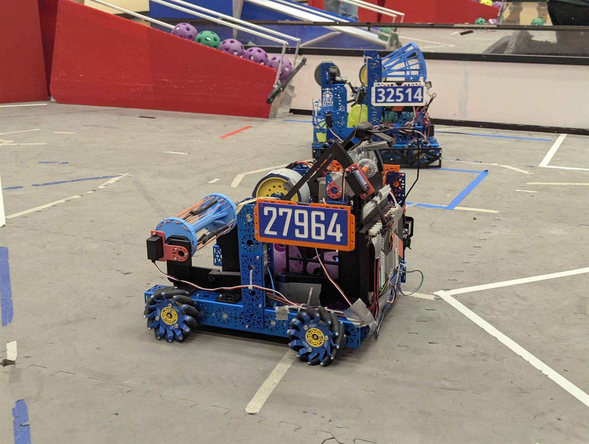

Blue allianceEst. 2024
27964CyberLyons
The founding team. They set the standard the whole program runs on: build it yourself, test it until it breaks, show up ready.
Plate 01Both robots · field stagingSeason 2026/27
Student-built · Est. 2024
Students design, machine, code and drive both robots. Two seasons in and growing. No corporate logo has ever been on these machines - the founding-partner spots are still open.
Plate 02Build grid 104×60Gain 1
Every part on both robots was chosen, cut and wired by a student. The drawing below is the same idea in miniature: a machine assembled out of nothing but typed characters.
Plate 03Team registry · 27964 / 32514Teams 02
The same build space, the same standards, twice the students who get to make something and take it to a field. CyberLyons set the bar in 2024. MechLyons proved it scales in 2025.
Blue allianceEst. 2024
27964The founding team. They set the standard the whole program runs on: build it yourself, test it until it breaks, show up ready.
Red allianceEst. 2025
32514Proof the program is growing. Same shop, same standards, double the students who get to build and compete.
Plate 04Field record · Fig. 02-07Sheet 01
Competitions, classrooms and the nights in between. All of it run by students.
01 / 06 · Field plates


Plate 05Program telemetryGain 1
Plate 06Placement channelsCH 01-03
Not a thank-you note. Placement on a machine that gets photographed all season, on the people driving it, and in front of a school of 1,400.

Premium placement on a machine photographed and filmed all season, on the field and in the pits. Every match, every match video, every recap post.
Your logo on team apparel at every qualifier, demo and workshop. Students wear it in the pits, on the drive team and in front of the schools we visit.


A 1,400-student school, three partner schools across North York, and an Instagram that grows with every build post of the season.
Plate 07Partner tiers · CADRange 200-1500+
Every tier includes everything below it. Pick the one that fits the budget you already have.
Tier I200 - 499
$200 - $499
Tier II500 - 1,499
$500 - $1,499
Tier III · Flagship1,500+
$1,500+
No corporate logo has ever been on these robots. First flagship partner takes that spot.

In-kind counts. Donated parts, tools, machine time or services offset cash at equal value and land you in the same tier.
Plate 08Allocation map · 10 linesCAD
This is the real season plan. Sponsorship goes against these lines and nothing else.
$10,000
Total CAD · 2026/27
05,00010,000
Plate 09Station WLMAC-001Open channel
Cheque or e-transfer, and everything in writing first. No pressure, no boilerplate deck.